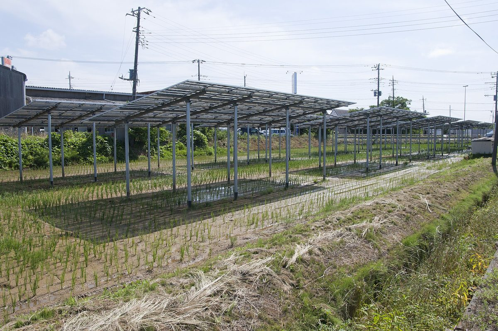

영농형 태양광 특별법 12월 시행, 주민 환원·임차농 보호 조항 담겼지만 나눌 몫은 숙제…정부 실증 29건 중 24건 수확량 줄어

농지 태양광 사용 기간 최대 8년 묶였던 제도 바뀌고, 반도체업계 에너지 협력체 보고서는 충남 당진·서산을 영농형 잠재량 상위로…실증 다수에선 수확 손실보다 발전 수익이 더 커
올해 5월 국회를 통과한 영농형 태양광 특별법이 12월 시행을 앞둔 가운데, 법에 발전 수익 일부를 지역 주민에게 돌려주는 규정과 임차농 보호 조항이 들어갔지만 실제로 얼마를 나눌지는 사업 구조를 짜면서 풀어야 할 과제로 남았다. 그동안 농지를 태양광 발전에 쓸 수 있는 기간이 최대 8년으로 묶여 있어, 오래 운영하며 투자금을 회수해야 하는 태양광 사업에는 너무 짧았다. 최근 국정감사 자료를 보면 정부가 추진한 영농형 태양광 실증 사업 29건 가운데 24건에서 수확량이 줄었고 늘어난 곳은 5건이었지만, 많은 사례에서 수확 감소로 본 손실보다 발전 수익이 더 컸다. 국제반도체산업협회(SEMI) 에너지 협력체가 지난달 낸 보고서는 경기·충남의 영농형 태양광 잠재량을 분석해 당진과 서산을 가장 높은 두 곳으로, 논산·예산·부여를 상위권으로 꼽고 충남 북부를 재생에너지 공급의 주요 후보 지역으로 평가했다. 석탄화력 폐쇄를 앞둔 충남에는 새 기회가 될 수 있지만, 아직은 잠재량 분석 단계여서 농사를 이어 가며 패널을 세울 수 있는지 현장 여건을 따져 봐야 한다. 이런 관심의 배경에는 AI로 전력 수요가 늘어난 미국 빅테크의 재생에너지 확보 경쟁이 있는데, 구글은 올해 초 1GW 규모 태양광 기반 전력구매계약을 맺었고 마이크로소프트가 2030년까지 확보해 둔 재생에너지는 40GW에 이른다.
시민에너지 관점
실증 29건 가운데 24건에서 수확이 줄었는데도 많은 곳에서 발전 수익이 손실보다 컸다는 것은, 영농형 태양광의 쟁점이 돈이 남느냐보다 남는 돈이 누구에게 가느냐라는 뜻이다. 땅 주인과 외지 사업자가 발전 수익을 가져가고 실제 농사짓는 임차농은 줄어든 수확만 떠안는다면 농촌에서 반발이 커질 수 있다는 우려가 나올 수 있다. 땅 주인과 임차농, 마을 주민이 함께 출자한 마을 협동조합이 발전소의 주인이 되면 수확 손실을 메우는 몫과 마을에 돌아갈 몫을 주민 스스로 정할 수 있다. 12월 시행에 맞춰 정할 세부 기준에는 주민 환원과 임차농 몫의 최소선을 숫자로 적고, 마을이 공동으로 소유하는 사업에 먼저 기회를 주는 장치가 들어가야 한다.
출처: KBS대전 2026-10-29 이연경 원문 보기
韓国の営農型太陽光特別法が12月施行、住民還元・小作農保護の条項は入ったが配分額は宿題…政府の実証29件中24件で収穫量減少
農地の太陽光利用期間が最長8年に制限されていた制度が変わり、半導体業界のエネルギー協力体の報告書は忠清南道の唐津・瑞山を営農型の潜在量上位に…実証の多くでは収穫の損失より発電収益が大きく
韓国で今年5月に国会を通過した営農型太陽光特別法が12月の施行を控えるなか、発電収益の一部を地域住民に還元する規定と小作農（賃借農家）を保護する条項が盛り込まれたものの、実際にどれだけ分けるかは事業の仕組みを設計する過程で解くべき課題として残った。これまで農地を太陽光発電に使える期間は最長8年に限られており、長期間の運営で投資を回収する太陽光事業には短すぎた。最近の国政監査資料によると、政府が進めた営農型太陽光の実証事業29件のうち24件で収穫量が減り、増えたのは5件だったが、多くの事例では収穫減による損失より発電収益のほうが大きかった。国際半導体製造装置材料協会（SEMI）のエネルギー協力体が先月出した報告書は、京畿道と忠清南道の営農型太陽光の潜在量を分析し、唐津と瑞山を最も高い2地域、論山・礼山・扶余を上位圏に挙げ、忠清南道北部を再生可能エネルギー供給の有力な候補地域と評価した。石炭火力の廃止を控える忠清南道には新たな機会になり得るが、まだ潜在量の分析段階であり、農業を続けながらパネルを設置できるか現地の条件を検討する必要がある。こうした関心の背景には、AIで電力需要が増えた米国の巨大IT企業による再生可能エネルギー確保の競争があり、グーグルは今年初めに1GW規模の太陽光をもとにした電力購入契約を結び、マイクロソフトが2030年までに確保した再生可能エネルギーは40GWに達する。
市民エネルギーの視点
実証29件のうち24件で収穫が減ったにもかかわらず多くの場所で発電収益が損失を上回ったことは、営農型太陽光の争点がお金が残るかどうかよりも、残ったお金が誰に渡るかにあることを意味する。地主や外部の事業者が発電収益を得て、実際に耕作する小作農は減った収穫だけを背負うことになれば、農村で反発が強まりかねないという懸念もあり得る。地主と小作農、集落の住民がともに出資した村の協同組合が発電所の持ち主になれば、収穫の損失を補う分と村に回す分を住民自身で決められる。12月の施行に合わせて定める細かな基準には、住民還元と小作農の取り分の最低線を数字で明記し、村が共同で所有する事業に優先的に機会を与える仕組みを盛り込むべきだ。
出典: KBS大田 2026-10-29 イ・ヨンギョン 原文を読む
韩国农光互补特别法12月施行，写入居民返利和佃农保护条款但分配比例仍待解…政府29个试点中24个减产
农地光伏使用期限最长8年的旧制度将改变，半导体行业能源合作体报告将忠清南道唐津、瑞山列为农光互补潜力前列…多数试点中发电收益超过减产损失
韩国今年5月在国会通过的农光互补（营农型光伏）特别法即将于12月施行，法中写入了把部分发电收益返还给当地居民的规定和保护佃农的条款，但实际分多少仍是设计项目结构时需要解决的课题。此前农地用于光伏发电的期限最长只有8年，对于需要长期运营回收投资的光伏项目来说太短。最近的国政监查资料显示，政府推进的29个农光互补试点项目中有24个减产，增产的只有5个，但在许多案例中，发电收益大于减产造成的损失。国际半导体产业协会（SEMI）能源合作体上月发布的报告分析了京畿道和忠清南道的农光互补潜力，认为唐津和瑞山是潜力最高的两个地区，论山、礼山、扶余也位居前列，并把忠南北部评为可再生能源供应的主要候选地区。对于即将关停燃煤电厂的忠清南道来说，这可能成为新的机遇，但目前仍处于潜力分析阶段，还需要实地考察能否在继续耕种的同时安装光伏板。这股关注的背景是，美国科技巨头因AI用电需求增加而竞相确保可再生能源：谷歌今年初签订了1吉瓦规模的光伏购电协议，微软到2030年已锁定的可再生能源达40吉瓦。
市民能源视角
29个试点中有24个减产，但许多地方的发电收益仍超过损失，这意味着农光互补的焦点不在于有没有钱可赚，而在于赚到的钱归谁。有人可能担心，如果地主和外来企业拿走发电收益，真正种地的佃农只承担减产，农村的反弹就会加剧。如果由地主、佃农和村民共同出资的村庄合作社成为电站的主人，弥补减产损失的份额和留给村庄的份额就可以由居民自己决定。配合12月施行而制定的细则，应当用数字写明居民返利和佃农份额的最低标准，并加入让村庄共同所有的项目优先获得机会的机制。
来源: KBS大田 2026-10-29 Lee Yeon-kyung 查看原文
Korea's agrivoltaics act takes effect in December with clauses on sharing income with residents and protecting tenant farmers, but how much to share is unresolved; yields fell in 24 of 29 government trials
The old eight-year cap on using farmland for solar is changing, and a semiconductor industry energy group's report ranks Dangjin and Seosan in South Chungcheong highest for agrivoltaic potential; in many trials power income outweighed crop losses
Korea's special act on agrivoltaics, passed by the National Assembly in May, is due to take effect in December with a provision returning part of the power income to local residents and a clause protecting tenant farmers, but how much will actually be shared remains a question to be settled as project structures are designed. Until now farmland could be used for solar generation for no more than eight years, too short for solar projects that need years of operation to recoup their investment. According to recent parliamentary audit data, yields fell in 24 of 29 government agrivoltaic trial projects and rose in only five, though in many cases the power income exceeded the losses from lower harvests. A report released last month by an energy collaboration group of SEMI, the global semiconductor industry association, analysed agrivoltaic potential in Gyeonggi and South Chungcheong provinces, ranking Dangjin and Seosan as the two highest, placing Nonsan, Yesan and Buyeo near the top, and naming northern South Chungcheong as a key candidate region for supplying renewable power. That could be a new opportunity for a province facing the closure of coal-fired plants, but the figures are still estimates of potential, and local conditions must be checked to see whether panels can go up while farming continues. Behind the interest is a scramble by US big tech firms for renewable power as AI drives up demand: Google signed a power purchase agreement backed by 1 GW of solar early this year, and Microsoft has secured 40 GW of renewable power through 2030.
Citizen Energy View
That harvests fell in 24 of 29 trials yet power income still outweighed the losses in many of them means the real issue in agrivoltaics is not whether money is left over but who gets it. There may be concern that if landowners and outside developers take the power income while the tenant farmers who actually work the land bear only the smaller harvests, resistance in rural areas will grow. If a village cooperative jointly funded by landowners, tenant farmers and residents owns the plant, residents themselves can decide how much goes to cover crop losses and how much goes to the village. The detailed rules being set for the December start should write down minimum shares for residents and tenant farmers in numbers and give priority to projects owned jointly by villages.
Source: KBS Daejeon 2026-10-29 Lee Yeon-kyung Read the original